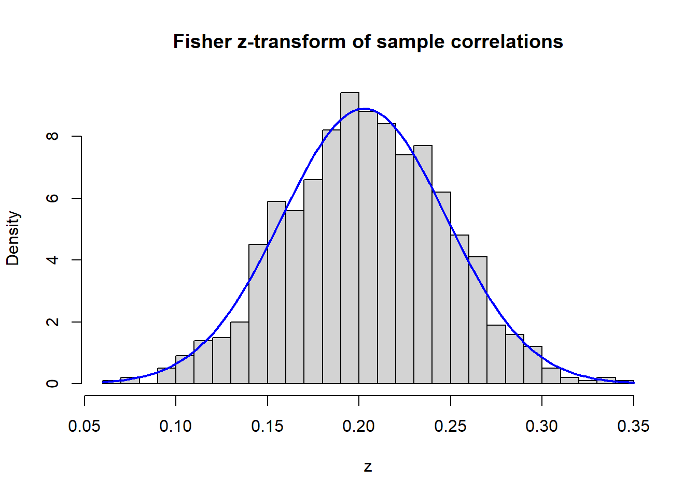

# Simulate sample correlations under rho = 0.2
library(MASS)
set.seed(1)
n <- 500
iter <- 1000
rho <- 0.2
srho <- rep(0, iter)
Sigma <- matrix(c(1, rho, rho, 1), 2, 2)
for (i in 1:iter) {
x <- mvrnorm(n, mu = c(0, 0), Sigma = Sigma)
srho[i] <- cor(x[,1], x[,2])
}Lecture 01: Conditional Independence as Structure
Review of distributions, independence, conditional independence, and dependence testing
Course overview
Motivation
Modern applied economics increasingly confronts high-dimensional dependence: datasets where many variables interact simultaneously; asset returns, macroeconomic indicators, firm-level panel data, cross-country flows. Standard regression tools break down when the number of relationships grows faster than the data can support. This course introduces network models as a principled way to describe and estimate these complex dependency structures.
The central premise is that most of these dependencies have structure and that structure can be exploited. Specifically, many pairs of variables that appear related are only connected indirectly, through other variables. Once we condition on the right set of controls, the dependence disappears. This is the idea of conditional independence, and it is the foundation of everything that follows.
Course arc
The course progresses through five main blocks across eight lectures:
- Basic concepts: graph terminology, random graphs, and the language of conditional independence that underlies all network models.
- LASSO estimation: sparse and high-dimensional estimation techniques, because real-world networks are too large for brute-force approaches.
- Contemporaneous networks: Gaussian graphical models and partial correlation networks, learning the simultaneous dependence structure among variables.
- Dynamic networks: Granger networks, extending the framework to capture lagged or temporal dependence (who predicts whom?).
- Breakpoint detection on networks: change point detection, asking whether the network structure itself shifts over time.
A recurring theme: the network is typically not observed directly. It is a latent quantity that must be estimated from data. In many cases, this reduces to a problem of covariance estimation: learning which entries of the precision matrix \(K = \Sigma^{-1}\) are zero.
Three pillars
The theoretical toolkit rests on three pillars:
- Conditional independence: tells us what can be ignored, turning intractable problems into tractable ones.
- Graphical models: encode conditional independence visually, separating direct from indirect relationships, which is crucial for causal and policy reasoning.
- Latent variables: capture hidden drivers such as confounders, common shocks, market factors, and unobserved heterogeneity.
\[ \text{Conditional independence} + \text{Graphs} + \text{Latent variables} = \text{Scalable structure for modern empirical work} \]
Note that this course
Part 1: Distributions and conditional expectations
Joint, marginal, and conditional distributions
Let \((X, Y)\) be a random vector. The joint distribution describes the full probabilistic behaviour of both variables together:
- Continuous case: joint density \(f_{XY}(x, y)\)
- Discrete case: \(f_{XY}(x, y) = P(X = x, Y = y)\)
Joint distributions are how we formally capture co-movement in economics: inflation and unemployment, returns on two assets, income and consumption, treatment assignment and outcomes.
Marginal distributions are obtained by integrating (or summing) out one variable:
\[ f_X(x) = \int f_{XY}(x, y) \, dy \qquad \text{(continuous)}, \qquad f_X(x) = \sum_y f_{XY}(x, y) \qquad \text{(discrete)}. \]
Geometrically, you collapse the 2D density onto one axis — projecting out the variable you don’t care about.
Conditional distributions answer: “given that \(X = x\), what does \(Y\) look like?”
\[ f_{Y|X}(y \mid x) = \frac{f_{XY}(x, y)}{f_X(x)}, \qquad \text{for } f_X(x) > 0. \]
This is Bayes’ rule in density form. Conditioning means restricting to a subpopulation: among employed workers, among treated units, among firms in distress, among borrowers with a given credit score.
WarningThe direction of conditioning matters
An AI fraud detector flags transactions with 90% sensitivity \(P(+ \mid F) = 0.9\) and 90% specificity \(P(- \mid F^c) = 0.9\), but fraud prevalence is only 1%.
\[ P(F \mid +) = \frac{P(+ \mid F) P(F)}{P(+)} = \frac{0.009}{0.009 + 0.099} \approx 0.083. \]
Even a strong test generates mostly false alarms when the base rate is low. \(P(F \mid +) \neq P(+ \mid F)\) — this is the base rate fallacy.
Conditional expectation as regression
The conditional expectation of \(Y\) given \(X = x\) is
\[ \mathbb{E}[Y \mid X = x] = \int y \, f_{Y|X}(y \mid x) \, dy. \]
Why does this matter? Because \(\mathbb{E}[Y \mid X]\) is the best predictor of \(Y\) from \(X\) under squared loss. That is, it solves
\[ \min_{g} \; \mathbb{E}\left[(Y - g(X))^2\right] \quad \Longrightarrow \quad g^*(X) = \mathbb{E}[Y \mid X]. \]
This is the theoretical justification for regression: the regression function is the conditional expectation. Every regression we run in applied economics is an attempt to approximate this object.
Part 2: Independence and conditional independence
Independence
\(X\) and \(Y\) are independent, written \(X \perp\!\!\!\perp Y\), if and only if
\[ f_{XY}(x, y) = f_X(x) \cdot f_Y(y) \qquad \text{for all } x, y. \]
Equivalently: \(f_{Y|X}(y \mid x) = f_Y(y)\). Learning \(X\) does not change the distribution of \(Y\) — knowing \(X\) gives zero predictive power over \(Y\).
Mean independence
A weaker concept: \(X\) and \(Y\) are mean independent if \(\mathbb{E}[Y \mid X] = \mathbb{E}[Y]\). The conditional mean doesn’t shift, but higher moments (variance, skewness) might. Think heteroskedasticity: \(X\) could affect the spread of \(Y\) without affecting its center. Mean independence \(\not\Rightarrow\) full independence.
Conditional independence
This is the key concept for the course. \(X\) and \(Y\) are conditionally independent given \(Z\), written \(X \perp\!\!\!\perp Y \mid Z\), if
\[ f_{XY|Z}(x, y \mid z) = f_{X|Z}(x \mid z) \cdot f_{Y|Z}(y \mid z) \qquad \text{for all } x, y, z. \]
Equivalently: \(f_{Y|XZ}(y \mid x, z) = f_{Y|Z}(y \mid z)\). Once \(Z\) is known, learning \(X\) gives no additional information about \(Y\). Conditional independence captures the absence of a direct link between \(X\) and \(Y\).
Why economists should care
Conditional independence appears everywhere in applied work:
- Causal identification: the unconfoundedness assumption is a CI statement: \((Y(1), Y(0)) \perp\!\!\!\perp D \mid X\).
- Selection problems: apparent group differences may vanish after conditioning on the right variables.
- Finance/macro: sparse dependence means most variable pairs are unrelated once the right controls are included.
- Latent structures: factor models assert that variables become independent once hidden factors are known.
In empirical work, assumptions are often best understood as CI restrictions — and this course will make that formal using graphs.
Part 3: The Gaussian bridge — from regression to precision matrices
CI and regression
Consider the linear model
\[ Y = \beta X + \gamma Z + \varepsilon, \qquad \varepsilon \perp\!\!\!\perp (X, Z). \]
If \(\beta = 0\), then \(Y \perp\!\!\!\perp X \mid Z\) — full conditional independence. \(X\) drops out of the data-generating process once \(Z\) is controlled for.
ImportantThe gap between mean and full independence
If we only assume \(\mathbb{E}[\varepsilon \mid X, Z] = 0\) (the standard OLS exogeneity condition), then \(\beta = 0\) implies only that the conditional mean does not depend on \(X\). This does not imply full conditional independence in general. The distinction matters whenever higher-order features of the distribution carry economic content (e.g., risk, inequality, tail behaviour).
The multivariate normal distribution
A random vector \(X = (X_1, \ldots, X_m)\) is Gaussian, written \(X \sim N_m(\mu, \Sigma)\), if its density is
\[ f(x) = (2\pi)^{-m/2} |\Sigma|^{-1/2} \exp\!\left(-\tfrac{1}{2}(x - \mu)^\top \Sigma^{-1}(x - \mu)\right). \]
In Gaussian models, many conditional independence questions become algebraic. This is why Gaussian graphical models are so useful — and why we start here before generalizing.
Gaussian marginals and conditionals
Partition \(X\) into two subvectors and the mean/covariance conformably:
\[ X = \begin{pmatrix} X_A \\ X_B \end{pmatrix}, \qquad \mu = \begin{pmatrix} \mu_A \\ \mu_B \end{pmatrix}, \qquad \Sigma = \begin{pmatrix} \Sigma_{AA} & \Sigma_{AB} \\ \Sigma_{BA} & \Sigma_{BB} \end{pmatrix}. \]
For example, with \(X = (X_1, X_2, X_3)\) and \(A = \{1, 3\}\), \(B = \{2\}\):
\[ X_A = (X_1, X_3), \qquad \Sigma_{AA} = \begin{pmatrix} \Sigma_{11} & \Sigma_{13} \\ \Sigma_{31} & \Sigma_{33} \end{pmatrix}. \]
Marginals are easy: \(X_A \sim N(\mu_A, \Sigma_{AA})\). Just read off the subblock — no integration needed. Gaussian families are closed under marginalization.
Conditionals are also Gaussian:
\[ \mathbb{E}[X_A \mid X_B = x_B] = \mu_A + \Sigma_{AB}\Sigma_{BB}^{-1}(x_B - \mu_B), \qquad \text{Var}(X_A \mid X_B = x_B) = \Sigma_{AA} - \Sigma_{AB}\Sigma_{BB}^{-1}\Sigma_{BA}. \]
Two key features:
- The conditional mean is linear in \(x_B\) (this is why OLS is exact under Gaussianity).
- The conditional variance does not depend on \(x_B\).
A special Gaussian property: zero covariance implies independence
For general distributions, \(\text{cov}(X_A, X_B) = 0\) does not imply independence. But for jointly Gaussian vectors:
\[ X_A \perp\!\!\!\perp X_B \quad \Longleftrightarrow \quad \Sigma_{AB} = 0. \]
This is a major simplification that many standard tools exploit — even when it isn’t made explicit (e.g., some “independence” tests only test zero covariance).
The precision matrix
The precision matrix is the inverse of the covariance matrix:
\[ K = \Sigma^{-1}. \]
This is the central object for the course. While \(\Sigma\) describes marginal dependence (do \(X_i\) and \(X_j\) co-move?), \(K\) describes conditional dependence (is there a direct link once everything else is controlled for?).
The key result connecting precision to conditional independence:
\[ X_i \perp\!\!\!\perp X_j \mid X_{\{1,\ldots,m\} \setminus \{i,j\}} \quad \Longleftrightarrow \quad K_{ij} = 0. \]
A zero off-diagonal entry in \(K\) means: once all other variables are controlled for, there is no remaining direct relation between \(X_i\) and \(X_j\). This is the bridge to graphs — later we will encode these zeros as missing edges.
From the block inversion formula (Schur complement), the conditional variance of \(X_A\) given \(X_B\) can also be expressed as
\[ \text{Var}(X_A \mid X_B) = K_{AA}^{-1}. \]
Partial correlation
For three variables \(X\), \(Y\), \(Z\), the partial correlation is
\[ \rho_{X,Y \cdot Z} = \frac{\rho_{XY} - \rho_{XZ}\rho_{YZ}}{\sqrt{(1 - \rho_{XZ}^2)(1 - \rho_{YZ}^2)}}. \]
It measures the residual linear association between \(X\) and \(Y\) after removing the linear effect of \(Z\). Equivalently, it equals the correlation of the residuals from regressing \(X\) on \(Z\) and regressing \(Y\) on \(Z\).
There is a direct link to the precision matrix. For the general \(m\)-variable case, the partial correlation between \(X_i\) and \(X_j\) controlling for all remaining variables is:
\[ \rho_{X_i, X_j \cdot \text{rest}} = -\frac{K_{ij}}{\sqrt{K_{ii} K_{jj}}}. \]
In the Gaussian case, zero partial correlation is equivalent to conditional independence:
\[ \rho_{X_i, X_j \cdot \text{rest}} = 0 \quad \Longleftrightarrow \quad K_{ij} = 0 \quad \Longleftrightarrow \quad X_i \perp\!\!\!\perp X_j \mid X_{\text{rest}}. \]
Economic interpretation of sparse precision matrices
In macro or finance, a dense covariance matrix (many non-zero \(\Sigma_{ij}\)) simply means many variables co-move. This may reflect common shocks rather than direct links. A sparse precision matrix (many zero \(K_{ij}\)) means that after controlling for everything else, only a few pairs remain directly related. This sparsity reveals the actual wiring of the system: contagion channels, input-output links, interbank exposures — stripped of indirect associations.
Part 4: Why conditioning matters — Simpson’s and Berkson’s paradoxes
The core lesson
Statistical conclusions depend on what we condition on. The same data can suggest opposite conclusions under different conditioning sets:
- Conditioning can remove dependence (by controlling for a confounder).
- Conditioning can create dependence (by selecting on a collider).
- A positive association can become negative after conditioning, and vice versa.
Simpson’s paradox: kidney stone treatments
Two treatments for kidney stones. Overall recovery rates: treatment \(a\) at 78%, treatment \(b\) at 83%. Treatment \(b\) looks better.
| Overall | Small stones | Large stones | |
|---|---|---|---|
| Treatment \(a\) | 78% | 93% | 73% |
| Treatment \(b\) | 83% | 87% | 69% |
Treatment \(a\) is better in both subgroups. Stone size is a confounder: large stones are harder to treat, and more severe cases were more likely assigned to treatment \(a\). The marginal comparison conflates treatment effects with case severity.
Simpson’s paradox: UC Berkeley admissions
Overall admission rates in 1973: 44% of men vs. 35% of women. But department-by-department, women were admitted at equal or higher rates. Women disproportionately applied to more competitive departments, creating a compositional effect that reversed the sign.
Berkson’s paradox: conditioning on a collider
Suppose Looks (\(X\)) and Personality (\(Y\)) are independent in the population. You only date people who are either attractive or nice — so being in your dating pool (\(S\)) depends on both variables. Within the dating pool, \(X\) and \(Y\) become negatively correlated: if someone in your pool isn’t attractive, they must be nice.
\[ X \perp\!\!\!\perp Y \text{ in the population}, \qquad X \not\!\perp\!\!\!\perp Y \mid S. \]
This is Berkson’s paradox: conditioning on a common effect (collider) of two independent variables creates spurious dependence.
Economic examples: wage vs. job satisfaction among workers who stay in a demanding sector; ability vs. family background among students admitted to a selective program.
Three structural patterns
These examples reduce to three canonical structures:
- Mediation (\(X \to Z \to Y\)): \(X\) and \(Y\) are marginally dependent, but \(Y \perp\!\!\!\perp X \mid Z\). Conditioning on the mediator blocks the indirect path.
- Confounding (\(X \leftarrow U \rightarrow Y\)): \(X\) and \(Y\) are marginally dependent (spuriously), but \(X \perp\!\!\!\perp Y \mid U\). Conditioning on the confounder removes the spurious link.
- Collider (\(X \to S \leftarrow Y\)): \(X \perp\!\!\!\perp Y\) marginally, but \(X \not\!\perp\!\!\!\perp Y \mid S\). Conditioning on the collider creates dependence.
Part 5: Testing dependence in data
From population to sample
Everything so far has been about population properties: \(X \perp\!\!\!\perp Y\) or \(X \perp\!\!\!\perp Y \mid Z\). In data, we observe a sample \((X^{(1)}, Y^{(1)}), \ldots, (X^{(n)}, Y^{(n)})\) and must decide whether the dependence we observe is real or just noise.
A practical choice: which notion of dependence are we testing?
- Linear dependence — captured by Pearson correlation
- Arbitrary dependence — requires nonparametric methods like distance correlation
Pearson correlation and Fisher’s \(z\)-transform
The Pearson test assesses \(H_0: \rho = 0\) vs. \(H_A: \rho \neq 0\). It makes sense when dependence is approximately linear and the Gaussian approximation is reasonable.
Fisher’s \(z\)-transform stabilizes the variance of the sample correlation \(r_n\):
\[ Z_n = \frac{1}{2} \log\!\left(\frac{1 + r_n}{1 - r_n}\right). \]
Under bivariate normality with true correlation \(\rho\):
\[ Z_n \;\dot{\sim}\; N\!\left(\frac{1}{2}\log\!\left(\frac{1 + \rho}{1 - \rho}\right),\; \frac{1}{n - 3}\right). \]
This transformation is useful because the raw sample correlation \(r_n\) has a distribution that depends on \(\rho\) in complicated ways — the \(z\)-transform makes inference straightforward with a standard normal pivot.
# Fisher transform: the histogram should match the theoretical normal density
zrho <- 0.5 * log((1 + srho)/(1 - srho))
hist(zrho, prob = TRUE, breaks = 30,
main = "Fisher z-transform of sample correlations", xlab = "z")
curve(dnorm(x,
mean = 0.5 * log((1 + rho)/(1 - rho)),
sd = 1/sqrt(n - 3)),
add = TRUE, lwd = 2, col = "blue")
In R, Fisher’s test is implemented through cor.test():
# Pearson test with rho = 0.2 (should reject H0: rho = 0)
library(MASS)
set.seed(1)
rho <- 0.2
Sigma <- matrix(c(1, rho, rho, 1), 2, 2)
x <- mvrnorm(n, mu = c(0, 0), Sigma = Sigma)
cor.test(x[,1], x[,2], method = "pearson")
Pearson's product-moment correlation
data: x[, 1] and x[, 2]
t = 3.5632, df = 498, p-value = 0.0004015
alternative hypothesis: true correlation is not equal to 0
95 percent confidence interval:
0.07096589 0.24201953
sample estimates:
cor
0.1576753
NoteWhat does the \(p\)-value mean?
It measures how surprising the observed sample correlation would be under \(H_0: \rho = 0\). A non-significant result does not imply independence — it only means there is insufficient evidence to reject zero linear correlation.
Limitation of Pearson correlation: zero correlation \(\neq\) independence
A pair of variables can be strongly dependent yet have zero Pearson correlation. The reason: correlation only measures the linear component of dependence. Nonlinear or symmetric dependence patterns produce \(\rho = 0\).
This is connected to a unique Gaussian property: for Gaussian data, zero covariance does imply independence. For any other distribution, it does not. The following example constructs two clearly dependent variables (a 45° rotation of independent uniforms) that are perfectly uncorrelated:
# Two uncorrelated but dependent variables (rotated uniform square)
set.seed(1); n <- 200
A <- runif(n) - 1/2; B <- runif(n) - 1/2
X <- t(c(cos(pi/4), -sin(pi/4)) %*% rbind(A, B))
Y <- t(c(sin(pi/4), cos(pi/4)) %*% rbind(A, B))
cor.test(X, Y, method = "pearson")
Pearson's product-moment correlation
data: X and Y
t = -0.84711, df = 198, p-value = 0.398
alternative hypothesis: true correlation is not equal to 0
95 percent confidence interval:
-0.1971897 0.0793095
sample estimates:
cor
-0.06009275 The Pearson test returns a non-significant \(p\)-value — it completely misses the dependence. Why? The support of \(Y\) clearly depends on \(X\) (plot them and you see a diamond shape), but the linear correlation is zero by construction. Only Gaussian distributions have the special property that a 45° rotation of independent components stays independent; for any other distribution, the rotation introduces dependence that Pearson cannot detect.
Distance correlation
Distance correlation \(\mathcal{R}(X, Y)\) is a fully nonparametric measure of dependence with the key property:
\[ \mathcal{R}(X, Y) = 0 \quad \Longleftrightarrow \quad X \perp\!\!\!\perp Y. \]
Unlike Pearson, it detects any form of dependence — nonlinear, non-monotone, tail-driven. The test is implemented via permutation in the energy package:
# Distance correlation detects nonlinear dependence
library(energy)
set.seed(1)
n <- 200
A <- runif(n) - 1/2
B <- runif(n) - 1/2
X <- A + B
Y <- A^2 - B^2
dcor.test(X, Y, R = 1000)
dCor independence test (permutation test)
data: index 1, replicates 1000
dCor = 0.17033, p-value = 0.04096
sample estimates:
dCov dCor dVar(X) dVar(Y)
0.02371961 0.17032735 0.28270979 0.06859706 A cautionary tale: aircraft data
The aircraft dataset from the sm package records wing span and speed across aircraft models. Pearson correlation finds nothing (\(p = 0.78\)), but distance correlation detects strong dependence (\(p < 0.001\)). The relationship between wingspan and speed is real but nonlinear — Pearson is blind to it.
# Pearson misses it; distance correlation catches it
library(sm); set.seed(1)
X <- aircraft$Span
Y <- aircraft$Speed
cat("Pearson p-value:", cor.test(X, Y)$p.value, "\n")Pearson p-value: 0.7816014 cat("Distance correlation p-value:", dcor.test(X, Y, R = 1000)$p.value, "\n")Distance correlation p-value: 0.000999001 Implication for economic data: if returns are heavy-tailed or relationships are nonlinear, Pearson correlation can miss important structure. This motivates the non-paranormal methods we will see in Lecture 2.
Tests for discrete data: the \(\chi^2\) test
For categorical data, we test independence using the \(\chi^2\) test, which compares observed cell counts to expected counts under independence (expected \(= \text{row total} \times \text{col total} / \text{grand total}\)). Degrees of freedom \(= (\text{rows} - 1)(\text{cols} - 1)\).
# Chi-squared test: gender vs. party affiliation
M <- as.table(rbind(c(762, 327, 468), c(484, 239, 477)))
dimnames(M) <- list(gender = c("F", "M"),
party = c("Democrat", "Independent", "Republican"))
(Xsq <- chisq.test(M))
Pearson's Chi-squared test
data: M
X-squared = 30.07, df = 2, p-value = 2.954e-07Xsq$expected # expected counts under independence party
gender Democrat Independent Republican
F 703.6714 319.6453 533.6834
M 542.3286 246.3547 411.3166Here, df \(= 2\) is the difference between 5 free parameters (saturated model) and 3 (independence model).
Testing conditional independence
Testing \(X \perp\!\!\!\perp Y \mid Z\) is much harder than testing marginal independence. Once we condition on \(Z\), we must compare conditional laws rather than marginal ones.
The difficulty depends on the modelling assumptions:
- Gaussian data: CI reduces to testing zero partial correlation — relatively straightforward.
- Discrete data: likelihood-ratio or stratified \(\chi^2\) tests.
- Nonlinear / non-Gaussian continuous data: kernel-based methods (e.g., KCI) are available but computationally heavier.
# CI test: X and Y are NOT conditionally independent given Z
# (Y depends on X^2, so both tests should reject)
library(CondIndTests)
library(bnlearn)
set.seed(1)
n <- 100
Z <- rnorm(n)
X <- 4 + 2 * Z + rnorm(n)
Y <- 3 * X^2 + Z + rnorm(n)
cat("KCI test p-value:", CondIndTest(X, Y, Z, method = "KCI")$pvalue, "\n")KCI test p-value: 2.419926e-10 cat("bnlearn CI test p-value:", bnlearn::ci.test(X, Y, Z)$p.value, "\n")bnlearn CI test p-value: 1.15458e-25 Both return very small \(p\)-values — correctly detecting that \(X\) and \(Y\) are not conditionally independent given \(Z\) (since \(Y\) depends on \(X^2\)). Note that bnlearn::ci.test uses a Gaussian (partial correlation) test by default, which happens to reject here because the dependence is strong, but would be less reliable for subtler nonlinear patterns.
CI testing in discrete data: UC Berkeley admissions revisited
We return to the Berkeley admissions data to test \(\text{Gender} \perp\!\!\!\perp \text{Admit} \mid \text{Dept}\). Both packages below yield \(p = 1\): there is no evidence of direct gender bias once department is conditioned on.
library(gRim)
data(UCBAdmissions)
bnlearn::ci.test(
x = "Gender",
y = "Admit",
z = "Dept",
test = "x2",
data = as.data.frame(UCBAdmissions)
)
gRim::ciTest(
as.data.frame(UCBAdmissions),
set = ~ Gender + Admit + Dept
)Using bnlearn
The ci.test function from bnlearn performs a \(\chi^2\) conditional independence test, stratifying by the conditioning variable (Dept):
Pearson's X^2
data: Gender ~ Admit | Dept
x2 = 0, df = 6, p-value = 1
alternative hypothesis: true value is greater than 0Using gRim
The ciTest function from gRim provides the same test with additional slice-level detail, showing the test statistic within each level of the conditioning variable:
Testing Gender _|_ Admit | Dept
Statistic (DEV): 0.000 df: 6 p-value: 1.0000 method: CHISQ
Slice information:
statistic p.value df Dept
1 0 1 1 A
2 0 1 1 B
3 0 1 1 C
4 0 1 1 D
5 0 1 1 E
6 0 1 1 FThe \(p\)-value of 1.0 tells us the observed association between Gender and Admit vanishes entirely once Department is accounted for. The apparent overall disparity was driven purely by differential application patterns across departments — a textbook instance of Simpson’s paradox.
Takeaways
- Independence means the joint law factorizes: \(f_{XY} = f_X \cdot f_Y\).
- Conditional independence is a structural statement about what remains after conditioning — it captures the absence of a direct link.
- Conditioning can remove dependence (confounding, mediation), but it can also create it (Berkson’s paradox / collider bias). Always ask: what am I conditioning on?
- In Gaussian models, CI becomes algebraic: zeros in the precision matrix \(K = \Sigma^{-1}\) correspond to absent direct relations. The partial correlation \(\rho_{X_i, X_j \cdot \text{rest}} = -K_{ij}/\sqrt{K_{ii}K_{jj}}\) gives the magnitude.
- Testing dependence requires care: Pearson correlation only detects linear association; distance correlation detects any form of dependence.
- Testing CI is harder than testing marginal independence, and the appropriate method depends on assumptions (Gaussian vs. nonparametric).
Looking ahead
Next lecture, we encode these conditional independence statements visually using undirected graphs:
- Missing edge \(\Longleftrightarrow\) conditional independence \(\Longleftrightarrow\) zero in the precision matrix
- Hammersley–Clifford theorem: graph separation = density factorization
- Graphical LASSO for learning sparse networks from high-dimensional data
- Non-paranormal models for robustness beyond Gaussianity